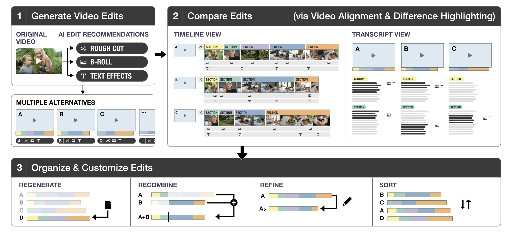
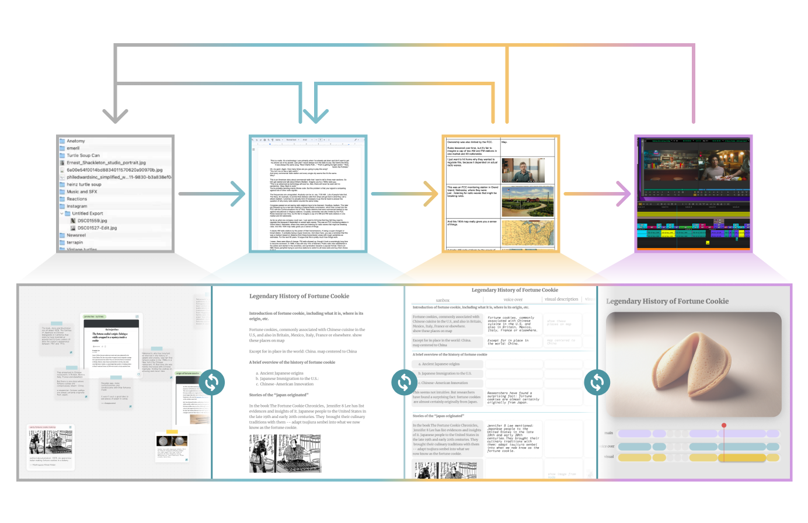
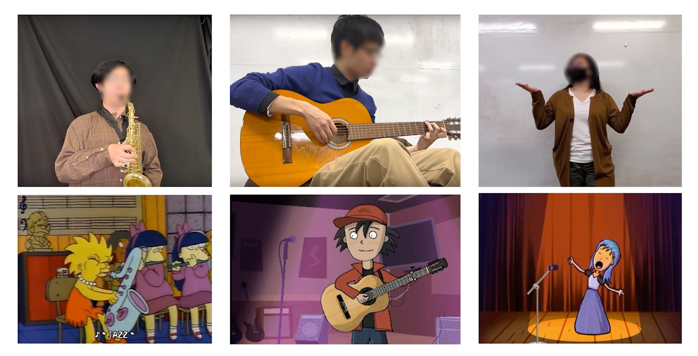
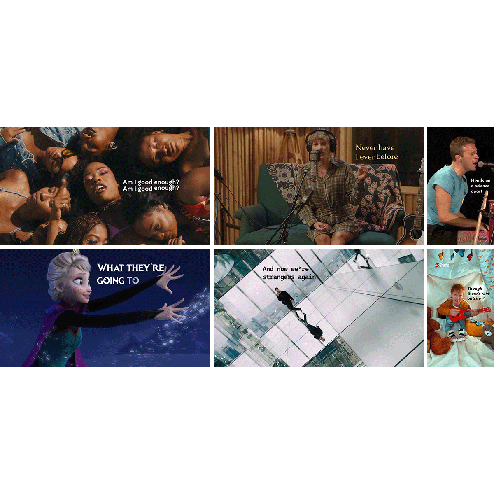
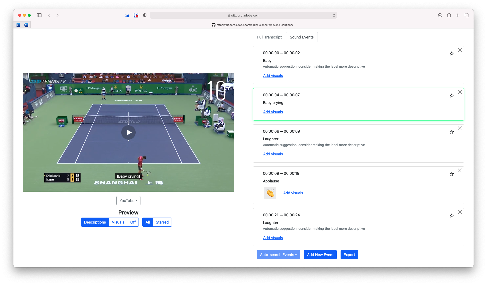
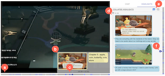
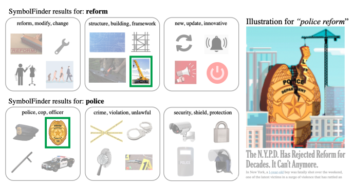
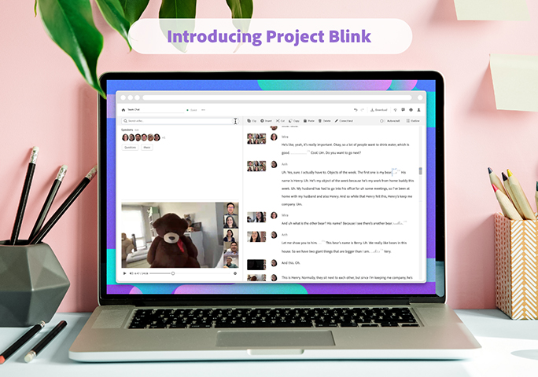

Senior Research Scientist
Adobe Research
One Broadway, Cambridge MA 02142
vshin [at] adobe [dot] com
I'm a Senior Research Scientist at Adobe Research, where I work
on rethinking how people create and edit video.
My research centers on agentic video workflows—AI systems that reason about user intent, proactively
propose edits, and support iterative, mixed-initiative collaboration. I design and build algorithms and
interfaces that help people author, edit, and consume audiovisual media more effectively. I care deeply
about the intersection of algorithms, UX, and real creative workflows.
I earned my PhD in Computer Science from MIT, advised by Fredo Durand in the Computer Graphics Lab, where my work bridged computer
graphics, video editing, and human-AI interaction. My research has been published in top graphics and HCI
venues.
Prior to MIT, I received a B.S. in Computer Science from Princeton University.
Publications
2025
|  |
VideoDiff: Human-AI Video Co-Creation with Alternatives
CHI 2025
|
|  |
Compositional Structures as Substrates for Human-AI Co-creation Environment: A
Design Approach and A Case Study
CHI 2025
|
2023
|  |
SoundToons: Exemplar-Based Authoring of Interactive Audio-Driven Animation
Sprites
ACM IUI 2023
|
|  |
Automated Conversion of Music Videos into Lyric Videos
UIST 2023
|
2022
|  |
Beyond Subtitles: Captioning and Visualizing Non-Speech Sounds in User Generated
Videos
ASSETS 2022
|
|  |
CatchLive: Real-time Summarization of Live Streams with Stream Content and
Interaction Data
CHI 2022
|
2021

|
Multi-level Correspondence via Graph Kernels for Editing Vector Graphics Designs
Graphics Interface 2021
|

|
Beyond Show of Hands: Engaging Viewers via Expressive and Scalable Visual
Communication in Live Streaming
[paper]
CHI 2021
|
|  |
SymbolFinder: Brainstorming Diverse Symbols Using Local Semantic Networks
UIST 2021
|
2020

|
Snapstream: Snapshot-based Interactions in Live Streaming for Visual Art
CHI 2020
|

|
Temporal Segmentation of Creative Live Streams
[pdf]
Proceedings of the 2020 CHI Conference on Human Factors in Computing Systems (CHI 2020)
|

|
Generating Audio-Visual Slideshows from Text Articles Using Word Concreteness
Proceedings of the 2020 CHI Conference on Human Factors in Computing Systems (CHI 2020)
|

|
Pose2Pose: Pose Selection and Transfer for 2D Character Animation
IUI 2020
|
2019

|
B-Script: Transcript-based B-roll Video Editing with Recommendations
Proceedings of the 2019 CHI Conference on Human Factors in Computing Systems (CHI 2019)
|
2018

|
DynamicSlide: Exploring the Design Space of Reference-based Interaction
Techniques for Slide-based Lecture Videos
Proceedings of the 2018 Workshop on Multimedia for Accessible Human Computer Interface
|

|
On Learning Associations of Faces and Voices
[pdf]
In Proceedings of Asian Conference on Computer Vision (ACCV 2018)
|
2016

|
Dynamic Authoring of Audio with Linked Scripts
UIST 2016
|

|
Reconciling Elastic and Equilibrium Methods for Static Analysis
[pdf]
ACM Transactions on Graphics (TOG) 2016
|
2015
|
|
Visual Transcripts: Lecture Notes from Blackboard-style Lecture Videos
[pdf]
ACM SIGGRAPH 2015
|
2012

|
Structural Optimization of 3D Masonry Buildings
[pdf]
ACM SIGGRAPH 2012
|

|
Analyzing and Simulating Fracture Patterns of Theran Wall Paintings
[pdf]
Journal on Computing and Cultural Heritage (JOCCH) 2012
|
2011

|
Learning How to Match Fresco Fragments
[pdf]
Journal on Computing and Cultural Heritage (JOCCH) 2011
|
2010
|
|
Analyzing Fracture Patterns in Theran Wall Paintings
VAST 2010
|
Past Projects
|  |
Project Blink: Creating the Future of AI-Powered Video Editing
[blog
post][video]
Project Blink is an AI-powered, web-based video editing app that transforms video editing. By leveraging the AI's media understanding capabilities, Project Blink allows users to edit by content rather than frame-by-frame. Users can search for words, images, people, and moments in a video, then cut and paste just as they would in a text document, streamlining the video editing workflow. |
Past Intern Collaborators
Adobe Research offers an exceptional internship program for graduate students. Here are a few research
interns I have been fortunate to work with.
If you are a PhD student and interested in a research internship, please send me an email with your CV
and a summary of your research interests.
- Oliver Alonzo - DePaul University
- Saelyne Yang - KAIST
- John Joon Young Chung - Midjourney
- Ailie Fraser - Adobe Research
- Nora Willett - CLO Virtual Fashion